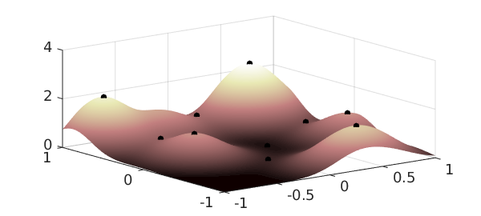
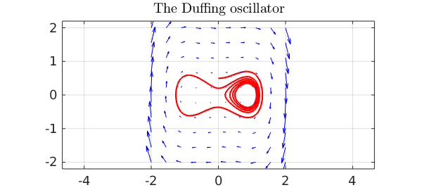
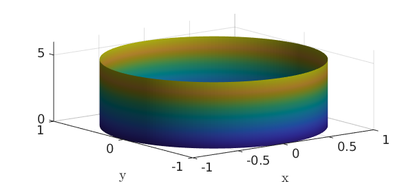
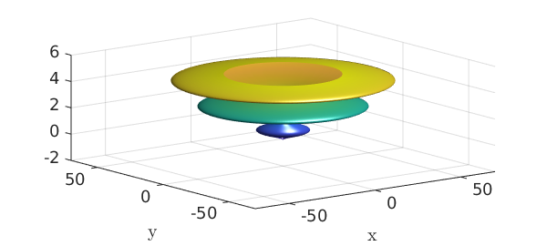

15.1 Representing parametric surfaces
In Chapter 14, we explored chebfun2v objects with two components, but Chebfun2 can also work with functions with three components, i.e., functions from a rectangle in $R^2$ into $R^3$. For example, we can represent the unit sphere via spherical coordinates as follows:
th = chebfun2(@(th,phi) th, [0 pi 0 2*pi]); phi = chebfun2(@(th,phi) phi, [0 pi 0 2*pi]); x = sin(th).*cos(phi); y = sin(th).*sin(phi); z = cos(th); F = [x;y;z]; surf(F), camlight, axis equal
Above, we have formed a chebfun2v with three components by vertical concatenation of chebfun2 objects. However, for familiar surfaces such as cylinders, spheres, and ellipsoids Chebfun2 has overloads of the commands cylinder, sphere, and ellipsoid to generate these surfaces more easily. For example, a cylinder of radius $1$ and height $5$ can be constructed like this:
h = 5; r = chebfun(@(th) 1+0*th,[0 h]); F = cylinder(r); surf(F), camlight

An important class of parametric surfaces are surfaces of revolution, which are formed by revolving a curve in the left half plane about the $z$-axis. The cylinder command can be used to generate surfaces of revolution. For example:
f = chebfun(@(t) (sin(pi*t)+1.1).*t.*(t-10),[0 5]); F = cylinder(f); surf(F), camlight

Here as another example is a torus with a gap in it.
x = chebfun2(@(x,y) x); y = chebfun2(@(x,y) y);
theta = 0.9*pi*x; phi = pi*y;
F = [-(1+.3*cos(phi)).*sin(theta);
(1+.3*cos(phi)).*cos(theta);
.3*sin(phi)];
surf(F), axis equal, camlight
15.2 Surface normals and the divergence theorem
Given a chebfun2v representing a surface, the normal can be computed by the Chebfun2 normal command. Here are the normal vectors of another torus:
r1 = 1; r2 = 1/3; % inner and outer radius d = [0 2*pi 0 2*pi]; u = chebfun2(@(u,v) u,d); v = chebfun2(@(u,v) v,d); F = [-(r1+r2*cos(v)).*sin(u); (r1+r2*cos(v)).*cos(u); r2*sin(v)]; % torus surf(F), camlight, hold on quiver3(F(1),F(2),F(3),normal(F,'unit'),'numpts',10) axis equal, hold off

Once we have the surface normal vectors we can compute, for instance, the volume of the torus by applying the divergence theorem:
$$ \int\int_V\int div(G) dV = \int_S\int G\cdot d\mathbf{S}, $$
where $div(G)=1$. Instead of integrating over the 3D volume, which is currently not possible in Chebfun2, we integrate over the 2D surface:
G = F./3; % full 3D divergence of G is 1 because F = [x;y;z]. integral2(dot(G,normal(F))) exact = 2*pi^2*r1*r2.^2
ans = 2.193245422464302 exact = 2.193245422464302
Chebfun2v objects with three components come with a warning. Chebfun2 works with functions of two real variables and therefore, operations such as curl and divergence (in 2D) have little physical meaning to the represented 3D surface. The reason we can compute the volume of the torus (above) is because we are using the divergence theorem and circumventing the 3D divergence.
To finish this section we represent the Klein Bagel. The solid black line shows the parameterisation seam and is displayed with the syntax surf(F,'-'). See [Platte 2013] for more on parameterised surfaces.
u = chebfun2(@(u,v) u, [0 2*pi 0 2*pi]); v = chebfun2(@(u,v) v, [0 2*pi 0 2*pi]); x=(3+cos(u/2).*sin(v)-sin(u/2).*sin(2*v)).*cos(u); y=(3+cos(u/2).*sin(v)-sin(u/2).*sin(2*v)).*sin(u); z=sin(u/2).*sin(v)+cos(u/2).*sin(2*v); surf([x;y;z],'-k','FaceAlpha',.6), camlight left, colormap(hot) axis tight equal off

15.3 References
[Platte 2013] R. Platte, Parameterizable surfaces, Chebfun2 Example: http://www2.maths.ox.ac.uk/chebfun/examples/geom/html/ParametricSurfaces.shtml